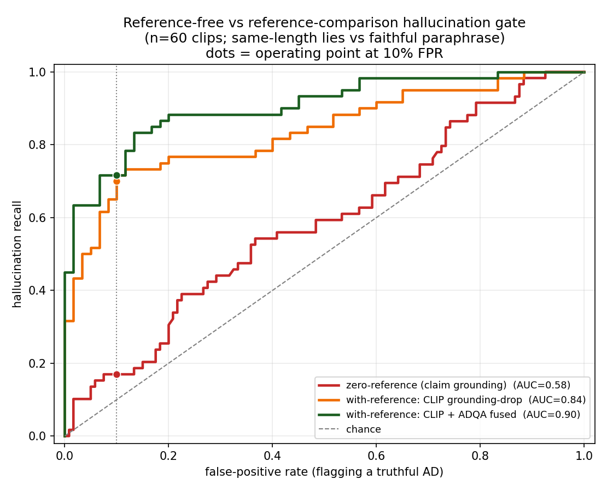
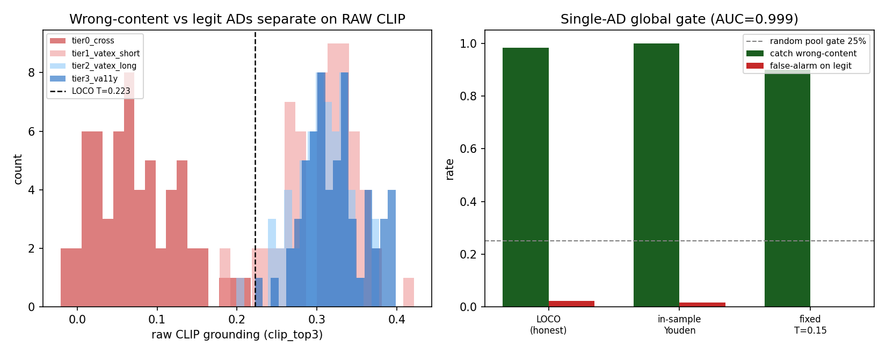

Audio description (AD) makes video accessible to blind and low-vision viewers by narrating visual information that the soundtrack alone does not convey. As multimodal systems begin to generate AD at scale, the deployment bottleneck shifts from authoring to auditing: a system must determine whether a candidate AD is visually grounded, whether it omits or fabricates important scene evidence, and which clips require scarce human review. Existing evaluation approaches are useful but incomplete for this setting. Reference-based metrics can be strong when a trusted professional AD exists, but newly generated AD for undescribed videos usually lacks such a reference. Holistic VLM judges are flexible, but in our measurements they trail structured visual evidence checks. User studies remain essential, but they cannot be run for every generated clip.
We present SceneTwin, a human-reference-free AD audit framework with three layers: (1) a CLIP + frame-grounded ADQA score for ranking candidate descriptions against the video itself; (2) safety gates for hallucination and wrong-content failures; and (3) a TRIBE-v2 neural side-car for review triage rather than scoring. We first correct our benchmark construction by removing an invalid “long VATEX” rung that measured verbosity rather than known quality. On the corrected three-tier ladder — cross-decoy < crowd caption < professional AD — SceneTwin reaches Spearman ρ = 0.952 on a 60-clip primary evaluation set spanning broad categories (58/60 clips fully ordered), with the original 18-clip pilot benchmark corroborating at ρ = 0.957 (17/18 fully ordered). A reference-style LLM-AD-Eval proxy nearly ties the ranking result (ρ = 0.942 / 0.941, primary / pilot) but requires the trusted professional AD reference that SceneTwin intentionally does not use. The contribution is therefore not a large leaderboard win; it is a deployable audit stack without human reference AD, plus operational gates.
For safety, a CLIP grounding-drop gate reaches AUC = 0.835 with 70% recall at 10% false-positive rate for controlled visual hallucinations, while a raw-CLIP wrong-content gate catches 98.3% of catastrophic wrong-clip descriptions at 2.2% false alarm. For triage, TRIBE is deliberately excluded from the AD-level score: a clip-level neural gap cannot alter within-clip candidate ranking. Its useful role is review prioritization. In cached external validation, TRIBE/gap-route features predict corrected ADQA failures at AUC = 0.794 with category-shuffle p = 0.003, outperforming category, transcript/speech, duration, and word-count confounds on the key target. SceneTwin is an audit layer for hybrid AI+human AD workflows, not a replacement for professional describers or blind-user validation.
Keywords: audio description; blind and low-vision accessibility; reference-free evaluation; video understanding; hallucination detection; human-AI authoring; review triage
Audio description translates visual information into language so blind and low-vision viewers can access video content that is not available through the soundtrack alone. Automated AD generation is improving rapidly, driven by video-language models, AD-specific generation systems, and human-AI authoring tools. But better generation does not remove the need for quality control. A generated AD can be fluent, plausible, and well written while still omitting the visual action that matters, fabricating visible facts, or describing a different clip.
This is the deployment problem SceneTwin targets. A platform generating AD for previously undescribed videos usually does not have a professional reference AD available for every clip. A human review panel cannot inspect every candidate. A single VLM score may sound convincing but does not necessarily expose the underlying visual evidence. The practical question is therefore:
Given a candidate audio description and the source video, can an audit system score visual preservation, catch unsafe failures, and route the right clips to review without already having a professional reference AD?
Prior work motivates each part of this question. CLIP-style vision-language models provide scalable grounding between text and frames [1]. ADQA argues that AD evaluation should ask whether descriptions support answers to visual questions rather than merely match a reference sentence [3]. AutoAD III and related AD systems introduce AD-specific metrics and reference-style evaluators such as LLM-AD-Eval [2]. Human-AI accessibility work such as Describe Now, DescribePro, CustomAD, WorldScribe, and ADx3 emphasizes that AD is not a fully automated one-shot product: users and describers need control, timing awareness, review, and iteration [9, 10, 11, 12, 13]. RNIB’s study of AI-generated AD similarly reports that AI can expand coverage but still needs human review for accuracy, cohesion, and context [5].
SceneTwin reframes AD evaluation as an audit stack. Instead of producing only a scalar score, it answers three operational questions:
This paper contributes:
AutoAD III develops AD generation and evaluation methods including LLM-AD-Eval, CRITIC, multi-reference recall, and action coverage [2]. ADx3 frames AD creation as a collaborative workflow that combines generation, refinement, and adaptive querying [13]. VideoA11y and AD timing work emphasize that AD quality depends not only on semantic correctness but also on synchronization, brevity, and delivery constraints [4].
SceneTwin is complementary. It is not an AD generator. It is an audit layer that can score generated, crowd, or professional-style candidate descriptions and decide what should be shipped, rejected, or reviewed.
Reference-based metrics compare a candidate AD to a trusted target. LLM-AD-Eval is useful in this setting, and our experiments confirm that a reference-style proxy is strong. However, the deployment setting for newly generated AD often lacks a trusted professional reference. SceneTwin therefore scores candidates against visual evidence instead of T3 text.
ADQA motivates this shift by arguing that AD should be evaluated by whether it supports visual and narrative comprehension questions [3]. SceneTwin adapts that idea for candidate ranking and deployment audit: frame-grounded questions define what visual evidence a blind or low-vision viewer should receive.
CoAD, StoryRecall, and AVBench broaden evaluation toward narrative coherence and fine-grained audio-video/text-video consistency [6, 7]. We explored related proxy features and fusions, but the final stack remains intentionally small: CLIP + ADQA for scoring, explicit gates for safety, and TRIBE only for review triage.
Recent accessibility systems show that AD cannot be reduced to a single universal caption. CustomAD reports that blind and low-vision users want control over length, emphasis, voice, speed, and format [10]. Describe Now studies user-triggered concise and detailed descriptions, showing both agency benefits and cognitive-load tradeoffs [11]. DescribePro studies authoring workflows where human describers use AI drafts, forks, tags, and editorial control rather than full automation [12]. WorldScribe studies live visual description and emphasizes intent, sound context, latency, and uncertainty [9].
SceneTwin is designed for this hybrid workflow. The goal is not to replace describers. The goal is to provide evidence about which descriptions preserve the scene and which clips deserve review.
TRIBE-v2 predicts cortical responses to vision, audio, and language streams [8]. AD exists precisely where the audio track does not carry visual information, so the predicted gap between audiovisual and audio-only responses is a plausible signal of visual-access load. SceneTwin uses this signal conservatively. We do not claim TRIBE measures BLV user utility directly. We use it to prioritize clips/windows for review and authoring hypotheses that ADQA, VLMs, or humans must verify.
An earlier SceneTwin benchmark used four tiers. The fourth rung, “long VATEX,” was built by selecting the longest among equal-status crowd captions. That construction does not represent known higher quality. It represents verbosity. Both CLIP and ADQA score the short-caption-to-long-caption step near chance, confirming that the rung is invalid as an ordered quality label.
The paper therefore uses a corrected three-tier ladder:
This correction matters. The paper does not claim that SceneTwin solves every AD quality axis. It claims that, on a valid controlled ladder where tiers have defensible semantics, SceneTwin can rank candidate descriptions by visual-access quality without a professional reference AD.
The corrected benchmark contains:
| Corpus | Clips | Candidate observations | Tiers |
|---|---|---|---|
| Primary (60-clip) | 60 | 180 | T0, T1, T3 |
| Pilot (18-clip) | 18 | 54 | T0, T1, T3 |
The 60-clip set spans broad categories and is the primary evaluation. The 18-clip set is the original pilot benchmark. The two sets are disjoint by construction — the 60-clip set was built to exclude the original 18 pilot clips — so agreement between them shows the ranking result is not an artifact of the smaller initial benchmark.
The primary statistic is Spearman rank correlation between candidate score and tier label. Because the deployment task is within-clip selection, we also report:
These pairwise counts are meaningful for SceneTwin because the score compares each candidate to visual evidence, not to the professional AD text. For reference-style baselines, T3-vs-lower wins are partly privileged because T3 is the reference.
SceneTwin samples frames from each clip and computes text-frame similarity using CLIP [1]. The visual-grounding leg uses the top frames rather than a full-video dense model:
clip_top3 = mean(top 3 frame-text similarities)
CLIP is useful because it is relatively deterministic and grader-free. It is not sufficient alone: it can miss relational, temporal, and count errors, and it can reward visually plausible but incomplete descriptions. SceneTwin therefore pairs it with frame-grounded QA.
The ADQA leg creates visual questions from sampled frames and grades whether each candidate AD answers them. A candidate earns credit for mentioning frame-evidenced information, not for matching a reference phrasing. The score is the fraction of questions answered.
This makes the metric more aligned with the viewer question: does the AD preserve what is visually needed to understand the scene?
For each clip, CLIP and ADQA scores are normalized across candidate tiers and averaged:
SceneTwinScore = 0.5 * CLIP_norm + 0.5 * ADQA_norm
The score is within-clip. It ranks candidate ADs for the same video. It is not meant to compare absolute AD quality across unrelated clips.
A ranker can still miss unsafe deployment failures. SceneTwin therefore includes two gates.
The hallucination gate uses CLIP grounding drop between a clip-relevant anchor and a candidate:
drop = CLIP(anchor AD, frames) - CLIP(candidate AD, frames)
The anchor can be trusted human AD or a generated clip-relevant candidate. The strict no-anchor hallucination gate is a negative result and is reported as such.
The wrong-content gate uses raw, unnormalized CLIP grounding for a single candidate AD. It targets catastrophic cases where the candidate describes the wrong clip and requires no candidate pool or reference AD.
TRIBE-v2 predicts neural responses to audiovisual and audio-only inputs [8]. SceneTwin derives a clip-level accessibility gap:
gap = 1 - cos(P_AV, P_A)
where P_AV is the predicted response to full audiovisual input and P_A is the predicted response to audio-only input. This gap is constant across candidate ADs for a clip. It cannot improve within-clip ranking, so it is not included in SceneTwinScore. Its purpose is review triage: high-gap clips/windows are more likely to need careful authoring or review because the visual channel carries information the soundtrack does not.
The visual-grounding leg uses CLIP ViT-L-14 (LAION-2B weights). We uniformly sample 8 frames per clip and compute frame-text cosine similarity; clip_top3 is the mean of the three highest frame-text similarities. The ADQA leg generates 5 frame-grounded multiple-choice questions per clip from the sampled frames and grades each candidate AD's answers against those frames with an instruction-tuned multimodal LLM; to limit same-model bias the pipeline supports cross-model question generation and grading (e.g., Claude and GPT-4o). The ADQA score is the fraction of questions answered correctly. Each leg is min-max normalized within clip across the candidate tiers before fusion, and the headline weight is the untuned 0.5/0.5 average. The primary statistic is within-clip Spearman ρ between score and tier label; we additionally report Kendall τ, within-clip ordering counts, within-clip label-permutation tests (B = 5000), and clip-clustered bootstrap 95% confidence intervals. All headline numbers are regenerated by cursor/research/recompute_corrected_ladder.py from the released per-tier score CSVs.

| Corpus | Clips | Observations | Spearman ρ | Fully ordered | T3-vs-lower wins | All pairwise wins |
|---|---|---|---|---|---|---|
| Primary (60-clip) | 60 | 180 | 0.952 | 58/60 | 118/120 | 178/180 |
| Pilot (18-clip) | 18 | 54 | 0.957 | 17/18 | 36/36 | 53/54 |
SceneTwin generalizes on the corrected task. The 60-clip primary result is close to the original 18-clip pilot, which indicates that the earlier apparent generalization gap was largely tied to the invalid long-caption rung.
The corrected-ladder result is not a narrow tuning artifact. Robustness checks in cursor/output/corrected_ladder_robustness.json show a stable plateau across ensemble weights and normalization choices. The result also survives bootstrap and within-clip permutation checks. The final 0.5/0.5 score is chosen for simplicity rather than post-hoc optimization.
| Metric | Primary (60) ρ | Pilot (18) ρ | Deployment note |
|---|---|---|---|
| SceneTwin CLIP+ADQA | 0.952 | 0.957 | no human reference AD |
| LLM-AD-Eval proxy | 0.942 | 0.941 | needs trusted T3/pro reference |
| ADQA alone | 0.869 | 0.856 | no human reference AD; model grader |
| CLIP alone | 0.747 | 0.835 | grader-free; useful for gates |
| Best frontier VLM judge | 0.847 | 0.863 | no reference, weaker here |
| CRITIC entity | 0.688 | 0.625 | weaker |
The strongest baseline is the LLM-AD-Eval proxy from the AutoAD III family. It nearly ties SceneTwin. This is not a failure; it clarifies the claim. Reference-style comparison is strong when a trusted reference AD exists. SceneTwin is valuable when that reference does not exist.
Normalization note: the ensemble and reference-style rows use per-clip min-max normalization; the single-signal “ADQA alone” and “CLIP alone” rows report pooled raw Spearman to show unnormalized single-signal behavior. Under matched per-clip normalization the single signals are higher (ρ: ADQA 0.946 / 0.888, CLIP 0.828 / 0.900 for primary / pilot), and ADQA alone (0.946) is close to the full ensemble (0.952) on the primary set — consistent with our signal-decomposition finding that ADQA is the backbone and CLIP adds category-specific lift rather than uniform gain.
Three frontier VLM judges trail the structured audit on the corrected ladder. The best VLM judge on the 60-clip primary set reaches ρ = 0.847 compared with SceneTwin’s ρ = 0.952. This suggests that asking a general VLM for holistic AD quality is less aligned with this controlled tier task than explicit frame-grounded evidence checks.
We tested multiple fusions inspired by ADQA, AutoAD III, CoAD, AVBench, timing rubrics, and neural side-cars. None improved the headline enough to justify extra complexity. The final architecture is intentionally small: CLIP+ADQA for scoring, explicit gates for safety, and TRIBE for triage only.


Controlled hallucination tests compare truthful expert ADs to same-length corrupted versions with two or three changed visual facts, plus faithful paraphrase controls. The strongest grader-free operating point is the CLIP grounding-drop gate:
| Gate | Signal | n | AUC | Recall @ 10% FPR |
|---|---|---|---|---|
| Grounding-drop vs clip-relevant anchor | CLIP only | 60 | 0.835 | 70.0% |
| Fused drop vs clip-relevant anchor | CLIP + ADQA | 60 | 0.904 | 71.7% |
| Absolute weakest-claim grounding | CLIP only, no anchor | 60 | 0.585 | 16.9% |
The CLIP-only grounding-drop gate is the clean deployment result because it is grader-free. The fused result is secondary because the ADQA leg uses a model grader. The no-anchor result is a negative control: absolute grounding alone is too noisy for hallucination detection.
A strict objection is that grounding drop appears to require a human expert anchor. Reference-substitution experiments show that the gate needs a clip-relevant anchor, not necessarily a human one. Model-generated or paraphrase anchors can support consistency checks, though current generated-anchor evidence is smaller-sample and should not be overstated.
The cross-decoy tier simulates catastrophic wrong-content AD. A raw-CLIP threshold catches wrong-clip descriptions without any reference or candidate pool. On the 60-clip primary set, wrong-content ADs average raw clip_top3 0.074 versus 0.311 for legitimate ADs. Leave-one-clip-out thresholding catches 98.3% of wrong-content ADs at 2.2% false alarm.
This gate is a high-recall review trigger, not an autonomous rejection oracle. At low base rates, precision can be poor, so flagged outputs should route to review.
ADQA margin is useful for confidence. On the 60-clip primary set, abstaining on the lowest-margin 20% sends 12/60 clips to review and ships the remaining 48 at 100% ship-best accuracy in the cached analysis. This supports a three-way deployment policy:

TRIBE-derived accessibility gap is a clip-level value. It is identical for every candidate AD of the same clip. It therefore cannot improve within-clip rank correlation. Earlier attempts to frame TRIBE as a calibration layer or AD ranker failed for this structural reason. SceneTwin uses TRIBE only as a side-car for review triage and authoring hypotheses.
The strongest current TRIBE result is not the old 18-clip pilot AUC=1 result. The stronger paper-safe result is cached validation against cheap confounds on the primary set. On the 60-clip primary set, accessibility_gap predicts corrected ADQA failures at AUC = 0.794 with category-shuffle p = 0.003.
| Target | Family | Best feature | AUC | Direction | Category-shuffle p |
|---|---|---|---|---|---|
| ADQA failure | TRIBE/gap-route | accessibility_gap | 0.794 | high gap = higher risk | 0.003 |
| ADQA failure | category-only | category_loo_adqa_fail_rate | 0.700 | high bad | 1.000 |
| ADQA failure | transcript/speech | transcript_char_count | 0.733 | low bad | 0.995 |
| ADQA failure | duration/word count | tier3_word_count | 0.714 | low bad | 0.990 |
This supports TRIBE as a review-budget signal beyond category, transcript/speech, duration, and word-count baselines. It does not support automatic skipping, automatic failure detection, or score replacement.
Sorting clips by mean visual gap catches more ADQA failures than random review at practical budgets:
| Queue | Budget | Clips reviewed | ADQA failures caught | Recall | Precision |
|---|---|---|---|---|---|
| mean_visual_gap | 10% | 6 | 2/10 | 0.20 | 0.33 |
| mean_visual_gap | 20% | 12 | 3/10 | 0.30 | 0.25 |
| mean_visual_gap | 25% | 15 | 4/10 | 0.40 | 0.27 |
| mean_visual_gap | 33% | 20 | 5/10 | 0.50 | 0.25 |
These numbers are moderate, not magical. They are still useful because the operational goal is prioritization: if review capacity is limited, inspect high visual-gap clips first.
TRIBE windows and cases can be mapped into product-facing review/authoring surfaces. The cached router contains 334 windows and 133 cases. Window-level routes are:
| Route | Windows | Access surface |
|---|---|---|
| static_ad_ok_low_gap | 218 | static AD / lower review pressure |
| layout_replay_or_scene_cue | 78 | layout replay or keyframe |
| action_state_or_agent_cue | 38 | concise action-state cue |
Case-level mappings include peak-window review cards, action-state cues, layout/keyframe replay, segmented scene/action treatment, and evidence-sidecar QC. This is the product implication of TRIBE: it proposes where and how to inspect, while ADQA, VLMs, or humans verify.
SceneTwin’s result is strongest when framed as deployment infrastructure. It is not a claim that a small metric replaces all human judgment. It is not a claim that TRIBE measures blind-user utility. It is not a claim that CLIP+ADQA dominates every reference-based evaluator.
Instead, SceneTwin shows that a human-reference-free audit stack can approach a strong reference-style evaluator on controlled ranking while adding safety and triage tools that matter at deployment time. If a professional reference AD already exists, reference comparison is appropriate and strong. If a system is generating AD for undescribed videos, SceneTwin provides a way to audit candidates against visual evidence, catch gross failures, and prioritize review.
This matches the direction of recent accessibility work. DescribePro, Describe Now, CustomAD, WorldScribe, ADx3, and RNIB all argue implicitly or explicitly against fully autonomous one-shot AD replacement. SceneTwin supplies an evidence layer for that hybrid workflow.
Primary artifacts:
cursor/output/external_ensemble_eval.csv — 60-clip primary scores.output/scenetwin_timing_20clip/ensemble/adqa_clip_ensemble_scores.csv — 18-clip pilot scores.cursor/output/corrected_ladder_robustness.json — robustness checks.cursor/research/recompute_corrected_ladder.py — regenerates all corrected-ladder headline numbers (ρ, ordering, pairwise, permutation, bootstrap, per-category) from the per-tier CSVs; stdlib-only, deterministic.cursor/output/gate_summary.json — hallucination grounding-drop gate.cursor/output/ref_subst/reference_substitution.json — anchor substitution.cursor/output/wrong_content_global_gate.json — wrong-content gate.cursor/output/gate_shipbest_selective.json — selective ship-best.cursor/research/output/vlm_as_judge_leaderboard.csv — VLM judge comparison.cursor/research/output/parallel_research/cheap_baselines/auc_summary.csv — TRIBE cheap-baseline gauntlet.cursor/research/output/parallel_research/access_surface/ — access-surface routing tables.Supporting reports:
output/reports/scenetwin-paper-evidence-check.mdoutput/reports/scenetwin-citation-map.mdoutput/reports/parallel-research-cheap-baseline-gauntlet.mdoutput/reports/parallel-research-access-surface-triage.mdoutput/reports/parallel-research-synthesis.mdoutput/reports/tribe-claims-audit.mdSceneTwin is a human-reference-free audit framework for audio description. On a corrected three-tier ladder, it ranks AD candidates strongly on a 60-clip primary set, corroborated by the original 18-clip pilot. But its central contribution is not overwhelming leaderboard superiority. The central contribution is deployable audit infrastructure: competitive ranking without a professional reference AD, safety gates for hallucination and wrong-content failures, and brain-grounded triage for deciding where human review should go first. This is the layer AI-assisted AD workflows need before generated descriptions can be shipped responsibly at scale.
[1] Alec Radford et al. 2021. *Learning Transferable Visual Models From Natural Language Supervision*. ICML.
[2] Tengda Han et al. 2024. *AutoAD III: Back to the Pixels*. arXiv:2404.14412.
[3] Divy Kala et al. 2025. *ADQA: What You See Is What You Ask*. arXiv:2510.00808.
[4] Chaoyu Li et al. 2025. *VideoA11y and G7/G8 Timing Guidelines for Audio Description*. arXiv:2502.20480.
[5] RNIB. 2025. *Exploring AI-generated audio description: can emerging technologies help expand access to broadcast media?* Research report, 1 September 2025.
[6] Eshika Khandelwal et al. 2025. *CoAD: Coherent Audio Description and StoryRecall*. arXiv:2510.25440.
[7] Jialiang Yang et al. 2026. *AVBench: Audio-Video Evaluation Benchmark*. arXiv:2605.24652.
[8] Stéphane d’Ascoli et al. 2026. *TRIBE: A Foundation Model of Vision, Audition, and Language for In-Silico Neuroscience*. arXiv:2605.04326.
[9] Ruei-Che Chang et al. 2024. *WorldScribe: Toward Context-Aware Live Visual Descriptions*. UIST 2024 / arXiv:2408.06627.
[10] Rosiana Natalie et al. 2024. *CustomAD: Audio Description Customization*. arXiv:2408.11406.
[11] Maryam Cheema et al. 2024. *Describe Now: User-Driven Audio Description for BLV Individuals*. arXiv:2411.11835.
[12] Maryam Cheema et al. 2025. *DescribePro: Collaborative Audio Description with Human-AI Interaction*. arXiv:2508.01092.
[13] Lana Do et al. 2026. *ADx3: A Collaborative Workflow for High-Quality Accessible Audio Description*. arXiv:2602.02684.